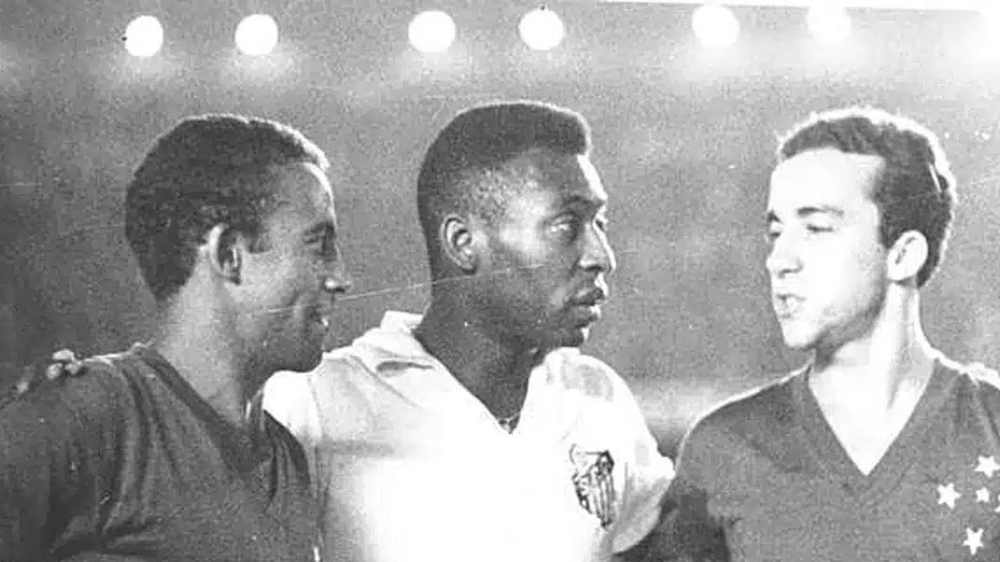

1966
Primeiro título brasileiro do Cruzeiro, com time liderado por Tostão, derrotando o Santos de Pelé na final do Torneio Roberto Gomes Pedrosa (pré-Brasileirão).

📸 Dirceu Lopes, Pelé e Tostão – Foto: Cruzeiro/Twitter/X
2003
Bicampeonato, depois de 37 anos, com time estrelado por Alex e Aristizábal, vencendo o Paysandu e confirmando a força do clube na era moderna. < Brasileirão 2003 - Cruzeiro 7x0 Bahia
2013
Título conquistado com Marcelo Oliveira como técnico, Cruzeiro teve um desempenho quase invicto, garantindo o campeonato com destaque para Ricardo Goulart e Everton Ribeiro. <
Brasileirão 2013 - Cruzeiro 4x1 Atlético Mineiro
2014
Bicampeonato consecutivo, mantendo a base de 2013, novamente sob Marcelo Oliveira, com destaque para a consistência defensiva e a regularidade do time.
Brasileirão 2014 - Cruzeiro 2x1 Goiás